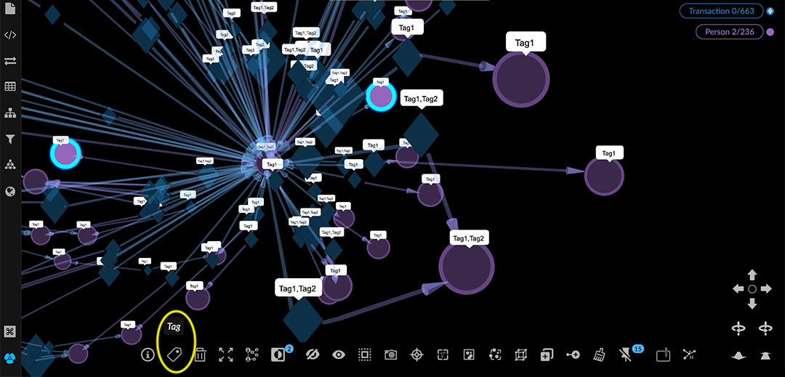
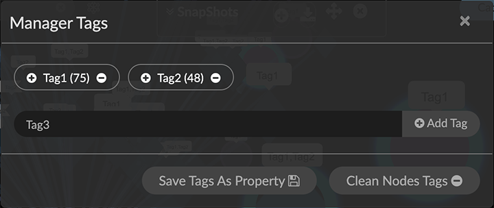
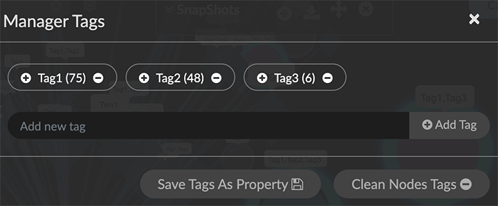
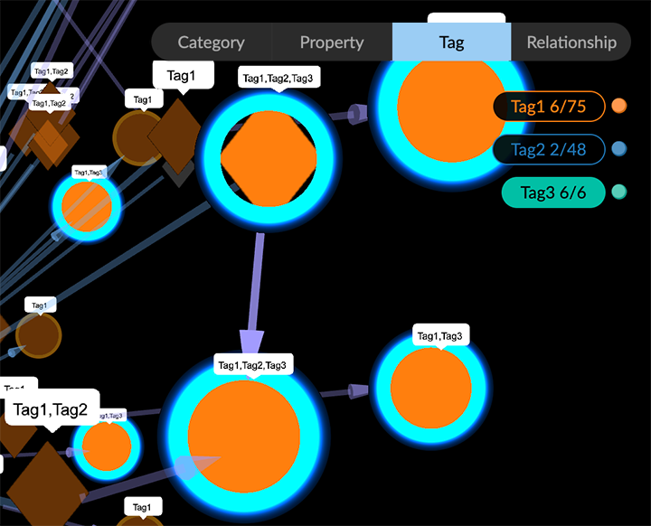
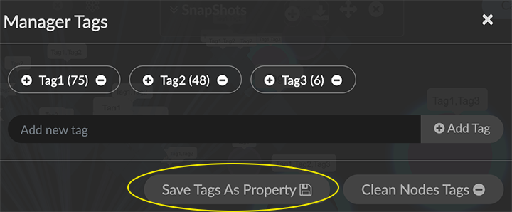
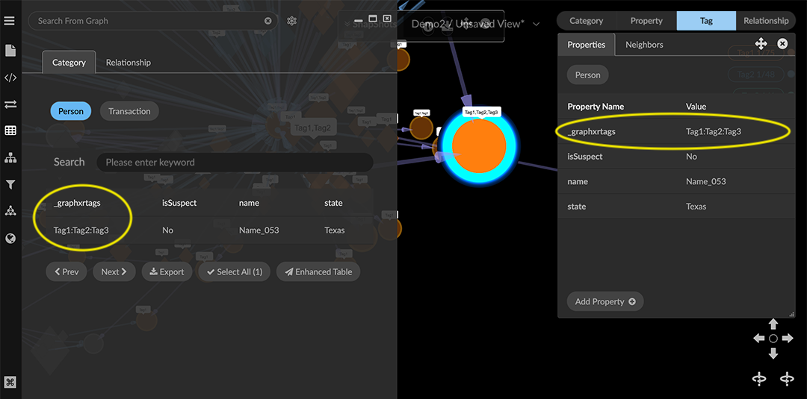

Tagging Selected Nodes Use Tag to create a label for any selection of nodes. This lets you group any set of nodes you consider related in some way. More than one tag can be added to a node. To create a tag, you must first select nodes, then use the Tag icon in the context menu to show the ManagerTags dialog. You can then: Create a tag (i.e. tag the selected nodes). Add (or remove) selected nodes to an existing tag. Use Save Tags As Property to add the temporary property _graphxrtags to all currently tagged nodes. When a tag is deleted, the property is removed from its tagged nodes. Use Clean Nodes Tags to delete all the tags on selected nodes. Tags appear in the legend under Tag, labeled with a color, name, number of nodes with that tag, and number that are currently selected. GraphXR automatically assigns a color for each tag. In the graph, a tagged node receives a small label listing its tag names.  Creating a new tag To create a tag: Select one or more nodes using any selection method. Click the Tag toolbar icon or select Actions>Tag in the right-click menu to display the Manager Tags dialog. Existing tag names are displayed along with the number of tagged nodes for each.  Enter a unique name for the tag in the textbook and click Add Tag. The new tag name is displayed above the textbox. In the graph, the tag label appears on the selected nodes.  Click the X at the top right to dismiss the Manager Tags dialog. In the graph, the tagged nodes are still selected. Click Tag in the legend to see the new tag on the list.  The tag name is displayed, along with its number of nodes. You can use this to check that you’ve tagged the expected number of nodes. Tags are listed in order of the number of nodes in the tag. Saving tags as a temporary property Optionally, you can click Save Tags As Property to add the temporary _graphxrtags property to all currently tagged nodes. You can then select the graphxrtags property value in the Property legend list and apply a persistent color and/or icon to the tags. These choices then also appear in the Tag list. If a node has more than one tag, a separate color can be applied in the Property list for every combination of multiple tags (including the different orders in which tags were added). When you display tagged nodes using the Tag legend, nodes are displayed with the color and icon of the first tag that was applied (e.g. a node tagged with Tag2, then Tag 1 is displayed as Tag 2). To save tag names as a temporary property: Select one or more nodes. Click the Tag icon or select Actions>Tag in the right-click menu to display the Manager Tags dialog. Click Save Tags As Property.  A message displays indicating success, and the _graphxrtags property is added to the selected tagged nodes, with the tag name as its property value. In the Property legend, you can view the list _graphxrtags property values. For nodes with more than one tag, the value is the different tag names separated by colons. Click the X at the upper right to dismiss the Manager Tags dialog. To inspect the _graphxrtags property and its values, either: Display a single node’s information window (Ctrl+I) or quick info rollover. Open a Table for a group of selected nodes.  Adding or removing a tag To add or remove a tag: Select a group of nodes using any selection method. Click the Tag icon or select Actions>Tag in the right-click menu to display the Manager Tags dialog. Locate a tag name and either: Click the + icon on the tag label to add the tag to the selected nodes. OR Click the - icon on the tag label to remove the tag from the selected nodes. The number of tagged nodes for that tag is immediately updated. If the tag has been removed from all nodes, the tag name disappears from the dialog. Click the X at the top right to dismiss the Manager Tags dialog. Cleaning all tags from selected nodes You can remove all the tags from any selection of nodes in one step, rather than selecting nodes with specific tags and then deleting that tag individually. To clean tags from selected nodes: Select a group of nodes using any selection method. Click the Tag icon or Actions>Tag in the right-click menu to display the Manager Tags dialog. Click Clean Nodes Tags. All of the tags applied to those nodes are removed. In the Manager Tags dialog and in the Tag legend, the total number of nodes for each tag is updated. If no nodes remain, the tag is deleted. In the graph, the tag label is removed from the selected nodes, and when viewed using the Tag legend, the tag color and icon (if any) is removed.